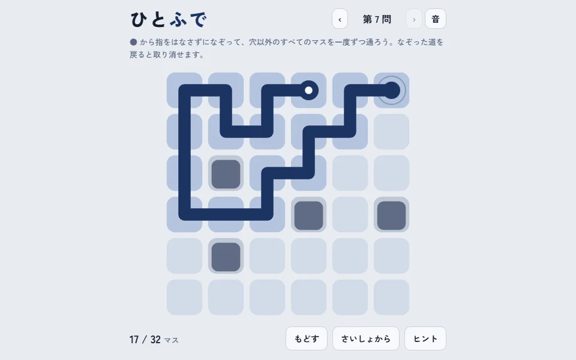
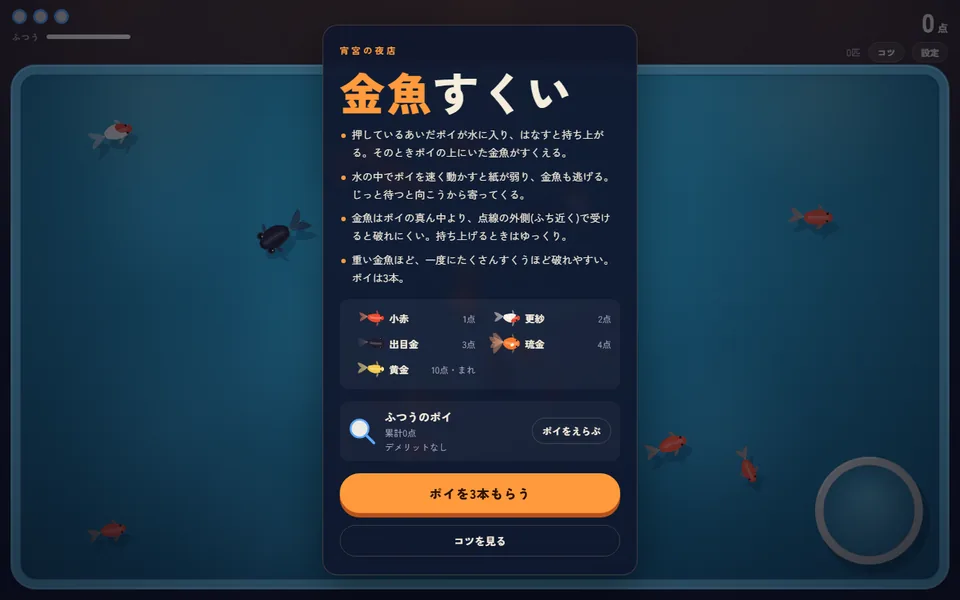
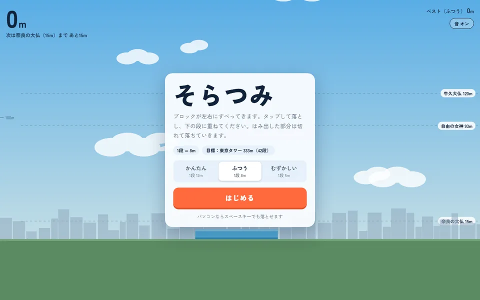
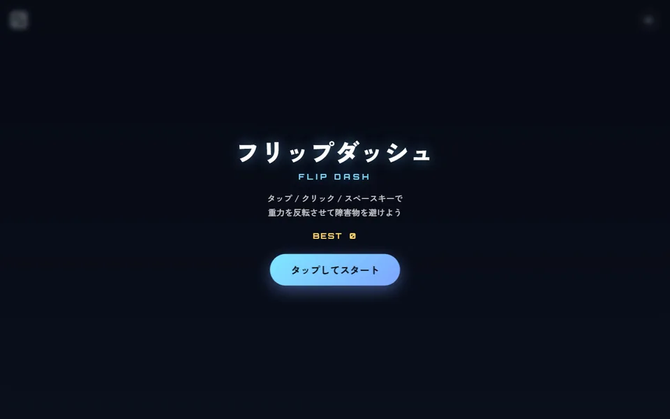
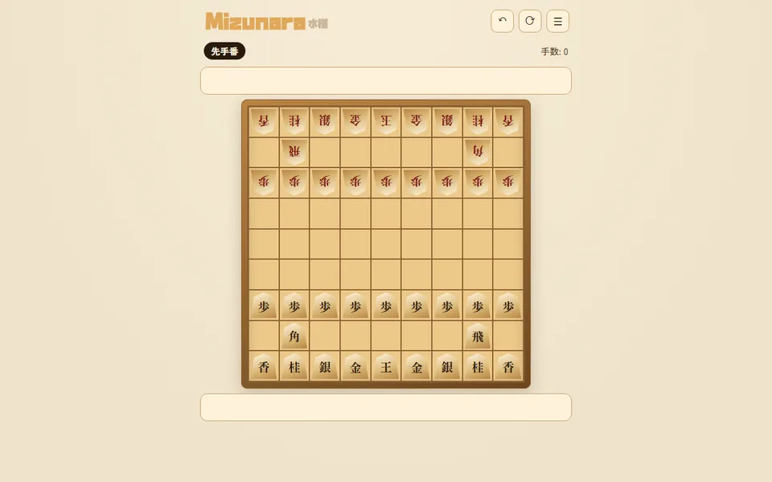

ひとふで
パズル● からなぞって、穴以外の全部のマスを一度ずつ通る一筆書き。問題は無限に続き、進むほど盤面が広く、穴が多くなる。
遊ぶ
金魚すくい
縁日ポイの紙が破れないよう、ふちで受けてそっとすくう。遊ぶほどポイが梅・竹・松と進化する。
遊ぶ
そらつみ
積み上げすべってくるブロックを積み上げて、奈良の大仏から富士山まで、実在の高さを目指す。
遊ぶ
フリップダッシュ
アクションタップで重力を反転させて、迫ってくる障害物のすき間をすり抜ける。進むほど速くなる。
遊ぶ
Mizunara
将棋1台で向かい合って指す2人対戦と、コンピュータとの対戦ができる将棋。駒の見た目も選べる。
遊ぶ